Документы
Апостиль диплома через Госуслуги
Как подать заявление онлайн и получить бумажный апостиль на оригинале российского диплома.
Как это работает
Госуслуги → загружаете скан диплома и приложения → ведомство проверяет документ → получаете уведомление → приносите оригинал диплома и приложение в ведомство, которое выбрали при подаче → там на оригинал диплома или на прикреплённый к нему лист ставят бумажный апостиль.
Загруженный на Госуслуги файл нужен для проверки. Сам бумажный апостиль ставится на оригинал документа.
Подача через Госуслуги
Откройте услугу
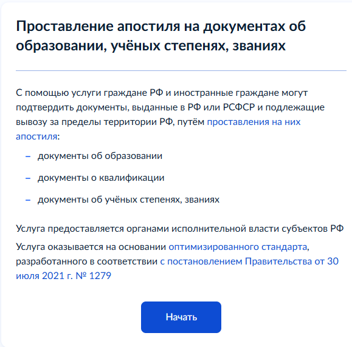
Где выдан документ
«Документ для апостиля выдан российской организацией либо на территории РФ или РСФСР?»
Да / Нет
Вы являетесь обладателем документа
Да / Нет
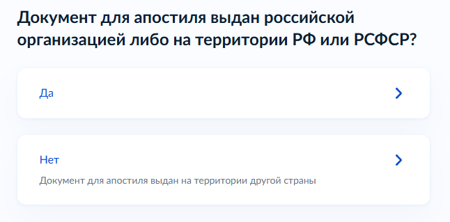
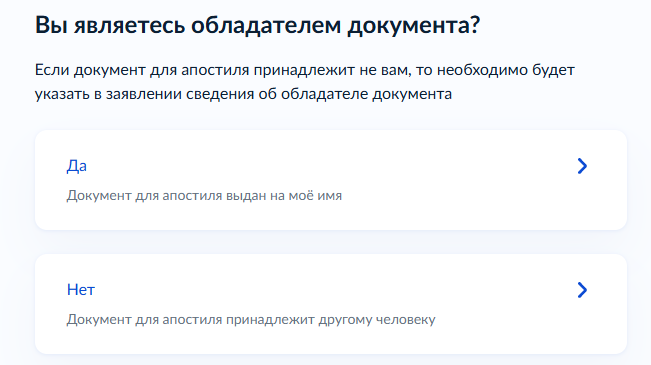
Вы меняли ФИО
Нет / Да
Если ФИО в дипломе отличается от текущих, Госуслуги попросят указать прежние данные.
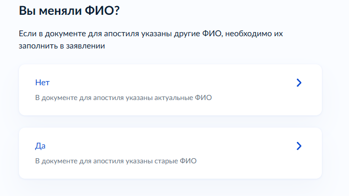
Что хотите получить
«Реестровую выписку и штамп апостиля» / «Реестровую выписку»
Для бумажного апостиля нужен первый вариант. Он предусматривает проставление апостиля на оригинале диплома или на отдельном листе, который скрепляют с оригиналом.
Если выбрать только «Реестровую выписку», бумажный апостиль на оригинал не ставится.
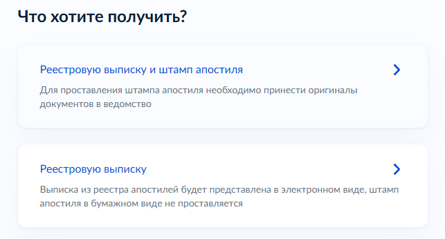
Как хотите получить штамп апостиля
«Лично в ведомстве» / «Почтовым отправлением наложенным платежом»
В этой инструкции используем личное получение: после проверки заявления оригинал диплома нужно будет передать в выбранное ведомство.
Вам нужна выписка на иностранном языке
Да / Нет
Для подачи диплома в Испании отдельная реестровая выписка на иностранном языке не нужна. Нужен сам диплом с бумажным апостилем.
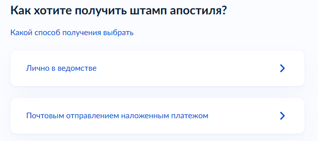
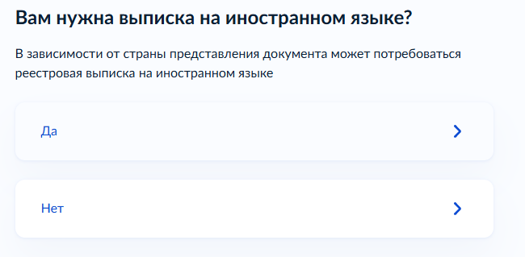
Выберите регион подачи заявления
Выберите регион, в котором будет удобно передать оригинал диплома и получить готовый документ.
Госуслуги покажут конкретное ведомство, его адрес и контакты.
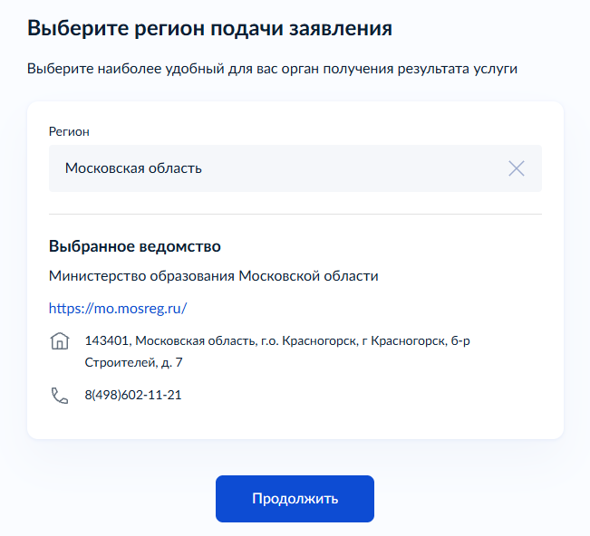
Что нужно для подачи заявления
На этом экране Госуслуги показывают, какие сведения понадобятся, стоимость и срок.
Госпошлина — 2 500 ₽.
На Госуслугах указан максимальный срок оказания услуги — 25 рабочих дней.
Перед отправкой заявление потребуется подписать электронной подписью.
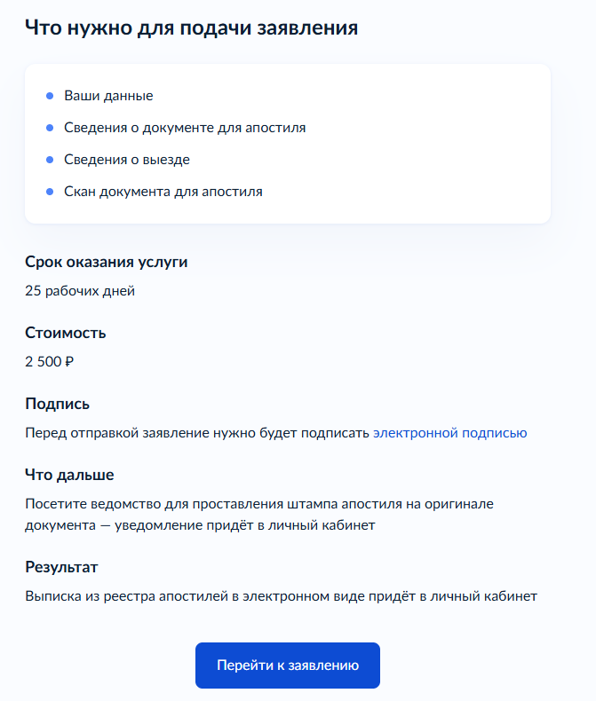
Проверьте ваши данные
Проверьте сведения, которые Госуслуги автоматически подставили из профиля, и продолжайте.
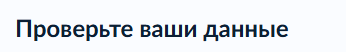
У вас есть номер записи ЕРН
Да / Нет
Если номер вам неизвестен, специально искать его ради подачи заявления не требуется.
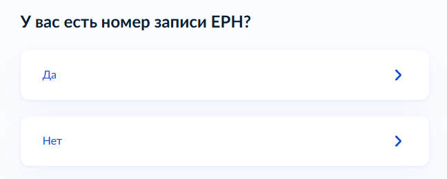
Выберите документ для апостиля
Укажите уровень образования и тип документа.
После этого Госуслуги предложат выбрать документ из реестра.
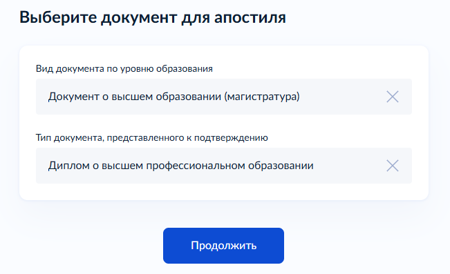
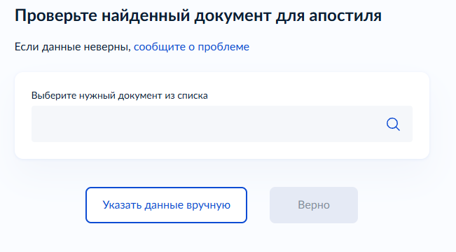
Выберите страну предъявления документа
Испания
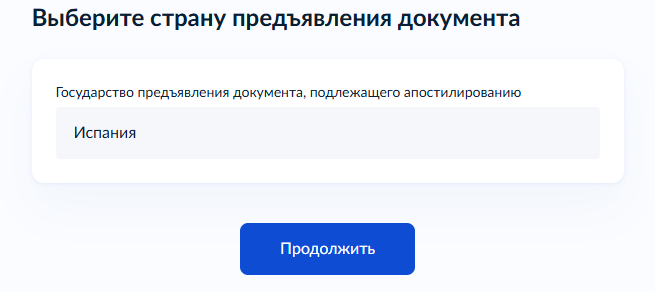
Загрузите документы
Загрузите все страницы диплома и все страницы приложения к нему.
Можно загрузить один файл в формате PDF или ZIP до 25 МБ.
Удобнее всего собрать всё в один PDF: диплом → все страницы приложения.
Сканы должны быть читаемыми, без обрезанных краёв и закрытых данных.
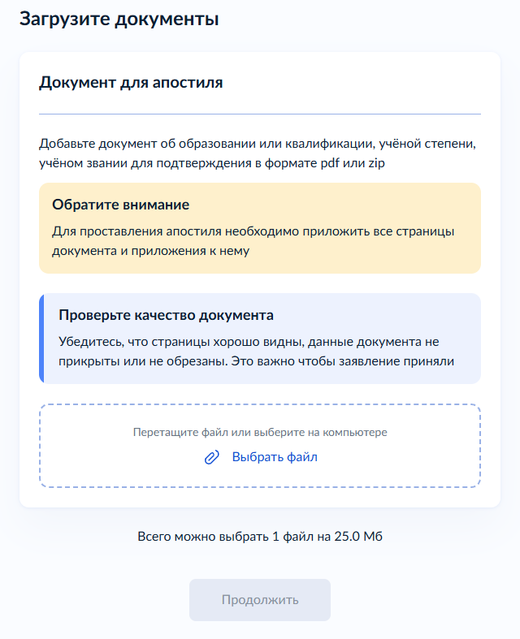
Отправьте заявление и оплатите госпошлину
Завершите заполнение формы, подпишите заявление электронной подписью и отправьте его.
После подачи оплатите госпошлину 2 500 ₽, когда в личном кабинете появится начисление или инструкция по оплате.
Дождитесь уведомления
Ведомство проверит заявление и сведения о дипломе.
Сразу после отправки заявления ехать в ведомство не нужно. Дождитесь уведомления в личном кабинете Госуслуг.
Если для проверки понадобятся дополнительные сведения, общий срок может составить до 25 рабочих дней.
Передайте оригинал в ведомство
После уведомления принесите оригинал диплома и приложение в ведомство, которое выбрали при подаче заявления.
Именно на оригинал диплома или на отдельный лист, скреплённый с ним, будет поставлен бумажный апостиль.
После передачи оригинала апостиль проставляется в течение 5 рабочих дней.
Получите готовый документ
Заберите оригинал диплома с приложением и бумажным апостилем.
Реестровая выписка об апостиле придёт в личный кабинет Госуслуг в электронном виде.
Официальные правила: подтверждение документов об образовании и квалификации.